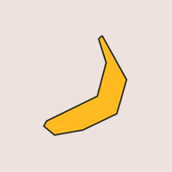

Banana Finder
Phone GPS link
Connect
BLUETOOTH
Not connected
PHONE LOCATION
Not started
BANANA FINDER SAYS
—
Keep this page open while you walk.
Chrome stops sharing location when the screen is off or you switch apps. This page keeps your screen awake while connected.